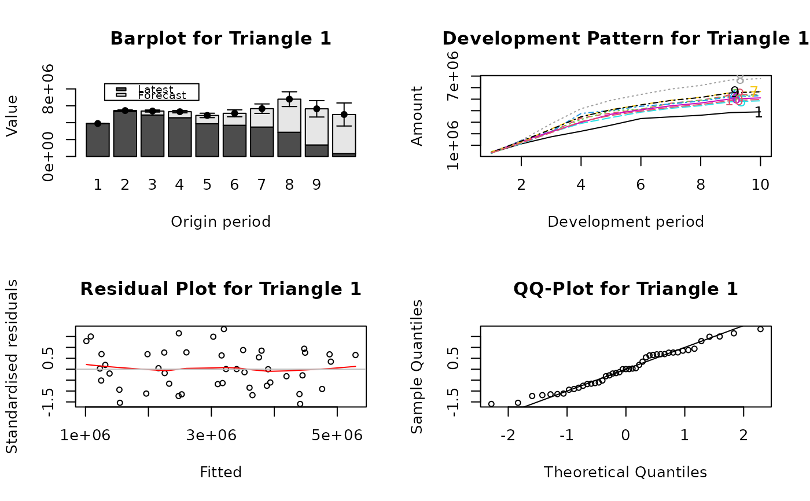
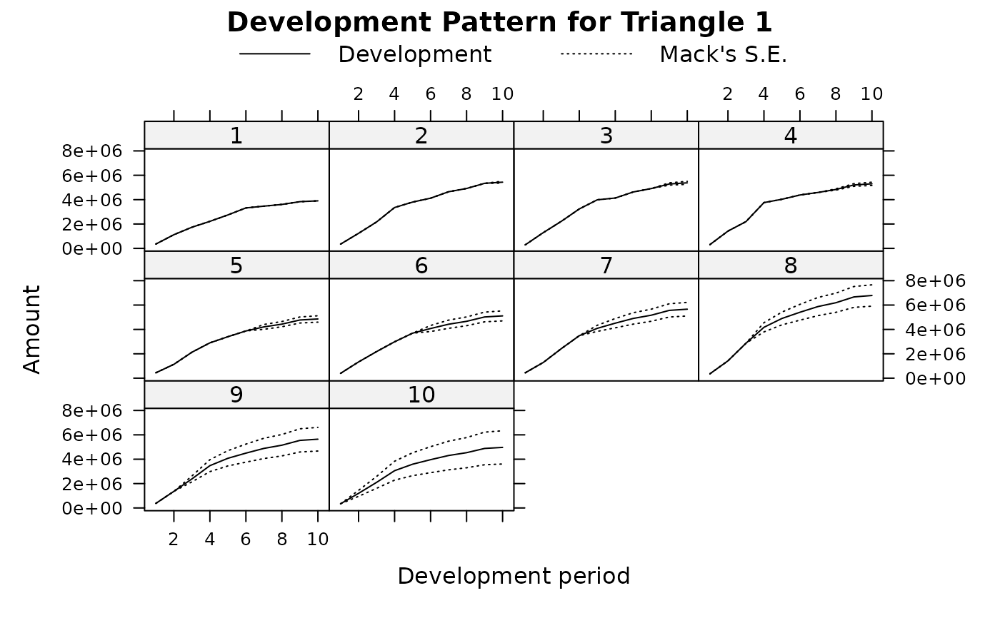

Multivariate Chain-Ladder Models
MultiChainLadder.RdThe function MultiChainLadder implements multivariate methods to forecast insurance loss payments based on several cumulative claims development triangles. These methods are multivariate extensions of the chain-ladder technique, which develop several correlated triangles simultaneously in a way that both contemporaneous correlations and structural relationships can be accounted for. The estimated conditional Mean Square Errors (MSE) are also produced.
Usage
MultiChainLadder(Triangles, fit.method = "SUR", delta = 1,
int = NULL, restrict.regMat = NULL, extrap = TRUE,
mse.method = "Mack", model = "MCL", ...)
MultiChainLadder2(Triangles, mse.method = "Mack", last = 3,
type = c("MCL", "MCL+int", "GMCL-int", "GMCL"), ...)Arguments
- Triangles
a list of cumulative claims triangles of the same dimensions.
- fit.method
the method used to fit the multivariate regression in each development period. The default is
"SUR"- seemingly unrelated regressions. When"OLS"(Ordinary Least Squares) is used, this is the same as developing each triangle separately.- delta
parameter for controlling weights. It is used to determine the covariance structure \(D(Y_{i,k}^{\delta/2})\Sigma_k D(Y_{i,k}^{\delta/2})\). The default value
1means that the variance is proportional to the cumulative loss from the previous period.- int
a numeric vector that indicates which development periods have intercepts specified. This only takes effect for
model = "GMCL". The defaultNULLmeans that no intercepts are specified.- restrict.regMat
a list of matrix specifying parameter restriction matrix for each period. This is only used for
model = "GMCL". The default valueNULLmeans no restriction is imposed on the development matrix. For example, if there are 3 triangles, there will be 9 parameters in the development matrix for each period ifrestrict.regMat = NULL. Seesystemfitfor how to specify the appropriate parameter constraints.- extrap
a logical value indicating whether to use Mack's extrapolation method for the last period to get the residual variance estimation. It only takes effect for
model = "MCL". If the data are trapezoids, it is set to beFALSEautomatically and a warning message is given.- mse.method
method to estimate the mean square error. It can be either
"Mack"or"Independence", which are the multivariate generalization of Mack's formulas and the conditional re-sampling approach, respectively.- model
the structure of the model to be fitted. It is either
"MCL"or"GMCL". See details below.- last
an integer. The
MultiChainLadder2function splits the triangles into 2 parts internally (see details below), and thelastargument indicates how many of the development periods in the tail go into the second part of the split. The default is3.- type
the type of the model structure to be specified for the first part of the split model in
MultiChainLadder2."MCL"- the multivariate chain-ladder with diagonal development matrix;"MCL+int"- the multivariate chain-ladder with additional intercepts;"GMCL-int"- the general multivariate chain-ladder without intercepts; and"GMCL"- the full general multivariate chain-ladder with intercepts and non-diagonal development matrix.- ...
arguments passed to
systemfit.
Details
This function implements multivariate loss reserving models within the chain-ladder framework. Two major models are included. One is the Multivariate chain-ladder (MCL) model proposed by Prohl and Schmidt (2005). This is a direct multivariate generalization of the univariate chain-ladder model in that losses from different triangles are assumed to be correlated but the mean development in one triangle only depends on its past values, not on the observed values from other triangles. In contrast, the other model, the General Multivariate chain-ladder (GMCL) model outlined in Zhang (2010), extends the MCL model by allowing development dependencies among different triangles as well as the inclusion of regression intercepts. As a result, structurally related triangles, such as the paid and incurred loss triangles or the paid loss and case reserve triangles, can be developed together while still accounting for the potential contemporaneous correlations. While the MCL model is a special case of the GMCL model, it is programmed and listed separately because: a) it is an important model for its own sake; b) different MSE methods are only available for the MCL model; c) extrapolation of the residual variance estimation can be implemented for the MCL model, which is considerably difficult for the GMCL model.
We introduce some details of the GMCL model in the following. Assume N triangles are available. Denote \(Y_{i,k}=(Y^{(1)}_{i,k}, \ldots ,Y^{(N)}_{i,k})\) as an \(N \times 1\) vector of cumulative losses at accident year i and development year k, where (n) refers to the n-th triangle. The GMCL model in development period k (from development year k to year k+1) is:
$$Y_{i,k+1}=A_k + B_k \cdot Y_{i,k}+\epsilon_{i,k},$$
where \(A_k\) is a column of intercepts and \(B_k\) is the \(N \times N\) development matrix. By default, MultiChainLadder sets \(A_k\) to be zero. This behavior can be changed by appropriately specifying the int argument.
Assumptions for this model are:
$$E(\epsilon_{i,k}|Y_{i,1},\ldots,Y_{i,I+1-k})=0.$$
$$cov(\epsilon_{i,k}|Y_{i,1},\ldots,Y_{i,I+1-k})=\Sigma_{\epsilon_{i,k}}=D(Y_{i,k}^{\delta/2})\Sigma_k D(Y_{i,k}^{\delta/2}).$$
$$\mbox{losses of different accident years are independent}.$$
$$\epsilon_{i,k} \, \mbox{are symmetrically distributed}.$$
The GMCL model structure is generally over-parameterized. Parameter restrictions are usually necessary for the estimation to be feasible, which can be specified through the restrict.regMat argument. We refer the users to the documentation for systemfit for details and the demo of the present function for examples.
In particular, if one restricts the development matrix to be diagonal, the GMCL model will reduce to the MCL model. When non-diagonal development matrix is used and the GMCL model is applied to paid and incurred loss triangles, it can reflect the development relationship between the two triangles, as described in Quarg and Mack (2004). The full bivariate model is identical to the "double regression" model described by Mack (2003), which is argued by him to be very similar to the Munich chain-ladder (MuCL) model. The GMCL model with intercepts can also help improve model adequacy as described in Barnett and Zehnwirth (2000).
Currently, the GMCL model only works for trapezoid data, and only implements mse.method = "Mack". The MCL model allows an additional mse estimation method that assumes independence among the estimated parameters. Further, the MCL model using fit.method = "OLS" will be equivalent to running univariate chain-ladders separately on each triangle. Indeed, when only one triangle is specified (as a list), the MCL model is equivalent to MackChainLadder.
The GMCL model allows different model structures to be specified in each development period. This is generally achieved through the combination of the int argument, which specifies the periods that have intercepts, and the restrict.regMat argument, which imposes parameter restrictions on the development matrix.
In using the multivariate methods, we often specify separate univariate chain-ladders for the tail periods to stabilize the estimation - there are few data points in the tail and running a multivariate model often produces extremely volatile estimates or even fails. In this case, we can use the subset operator "[" defined for class triangles to split the input data into two parts. We can specify a multivariate model with rich structures on the first part to reflect the multivariate dependencies, and simply apply multiple univariate chain-ladders on the second part. The two models are subsequently joined together using the Join2Fits function. We can then invoke the predict and Mse methods to produce loss predictions and mean square error estimations. They can further be combined via the JoinFitMse function to construct an object of class MultiChainLadder. See the demo for such examples.
To facilitate such a split-and-join process for most applications, we have created the function MultiChainLadder2. This function splits the data according to the last argument (e.g., if last = 3, the last three periods go into the second part), and fits the first part according to the structure indicated in the type argument. See the 'Arguments' section for details.
Note
When MultiChainLadder or MultiChainLadder2 fails, the most possible reason is that there is little or no development in the tail periods. That is, the development factor is 1 or almost equal to 1. In this case, the systemfit function may fail even for fit.method = "OLS", because the residual covariance matrix \(\Sigma_k\) is singular. The simplest solution is to remove these columns using the "[" operator and fit the model on the remaining part.
Also, we recommend the use of MultiChainLadder2 over MultiChainLadder. The function MultiChainLadder2 meets the need for most applications, is relatively easy to use and produces more stable but very similar results to MultiChainLadder. Use MultiChainLadder only when non-standard situation arises, e.g., when different parameter restrictions are needed for different periods. See the demo for such examples.
Value
MultiChainLadder returns an object of class MultiChainLadder with the following slots:
- model
the model structure used, either
"MCL"or"GMCL"- Triangles
input triangles of cumulative claims that are converted to class
trianglesinternally.- models
fitted models for each development period. This is the output from the call of
systemfit.- coefficients
estimated regression coefficients or development parameters. They are put into the matrix format for the GMCL model.
- coefCov
estimated variance-covariance matrix for the regression coefficients.
- residCov
estimated residual covariance matrix.
- fit.method
multivariate regression estimation method
- delta
the value of delta
- mse.ay
mean square error matrix for each accident year
- mse.ay.est
estimation error matrix for each accident year
- mse.ay.proc
process error matrix for each accident year
- mse.total
mean square error matrix for all accident years combined
- mse.total.est
estimation error matrix for all accident years combined
- mse.total.proc
process error matrix for all accident years combined
- FullTriangles
the forecasted full triangles of class
triangles- int
intercept indicators
References
Buchwalder M, Bühlmann H, Merz M, Wüthrich M.V (2006). The mean square error of prediction in the chain-ladder reserving method (Mack and Murphy revisited), ASTIN Bulletin, 36(2), 521-542.
Prohl C, Schmidt K.D (2005). Multivariate chain-ladder, Dresdner Schriften zur Versicherungsmathematik.
Mack T (1993). Distribution-free calculation of the standard error, ASTIN Bulletin, 23, No.2.
Mack T (1999). The standard error of chain-ladder reserve estimates: recursive calculation and inclusion of a tail factor, ASTIN Bulletin, 29, No.2, 361-366.
Merz M, Wüthrich M (2008). Prediction error of the multivariate chain ladder reserving method, North American Actuarial Journal, 12, No.2, 175-197.
Zhang Y (2010). A general multivariate chain-ladder model.Insurance: Mathematics and Economics, 46, pp. 588-599.
Zhang Y (2010). Prediction error of the general multivariate chain ladder model.
Author
Wayne Zhang actuary_zhang@hotmail.com
Examples
# This shows that the MCL model using "OLS" is equivalent to
# the MackChainLadder when applied to one triangle
data(GenIns)
(U1 <- MackChainLadder(GenIns, est.sigma = "Mack"))
#> MackChainLadder(Triangle = GenIns, est.sigma = "Mack")
#>
#> Latest Dev.To.Date Ultimate IBNR Mack.S.E CV(IBNR)
#> 1 3,901,463 1.0000 3,901,463 0 0 NaN
#> 2 5,339,085 0.9826 5,433,719 94,634 75,535 0.798
#> 3 4,909,315 0.9127 5,378,826 469,511 121,699 0.259
#> 4 4,588,268 0.8661 5,297,906 709,638 133,549 0.188
#> 5 3,873,311 0.7973 4,858,200 984,889 261,406 0.265
#> 6 3,691,712 0.7223 5,111,171 1,419,459 411,010 0.290
#> 7 3,483,130 0.6153 5,660,771 2,177,641 558,317 0.256
#> 8 2,864,498 0.4222 6,784,799 3,920,301 875,328 0.223
#> 9 1,363,294 0.2416 5,642,266 4,278,972 971,258 0.227
#> 10 344,014 0.0692 4,969,825 4,625,811 1,363,155 0.295
#>
#> Totals
#> Latest: 34,358,090.00
#> Dev: 0.65
#> Ultimate: 53,038,945.61
#> IBNR: 18,680,855.61
#> Mack.S.E 2,447,094.86
#> CV(IBNR): 0.13
(U2 <- MultiChainLadder(list(GenIns), fit.method = "OLS"))
#> $`Summary Statistics for Input Triangle`
#> Latest Dev.To.Date Ultimate IBNR S.E CV
#> 1 3,901,463 1.0000 3,901,463 0 0 0.000
#> 2 5,339,085 0.9826 5,433,719 94,634 75,535 0.798
#> 3 4,909,315 0.9127 5,378,826 469,511 121,699 0.259
#> 4 4,588,268 0.8661 5,297,906 709,638 133,549 0.188
#> 5 3,873,311 0.7973 4,858,200 984,889 261,406 0.265
#> 6 3,691,712 0.7223 5,111,171 1,419,459 411,010 0.290
#> 7 3,483,130 0.6153 5,660,771 2,177,641 558,317 0.256
#> 8 2,864,498 0.4222 6,784,799 3,920,301 875,328 0.223
#> 9 1,363,294 0.2416 5,642,266 4,278,972 971,258 0.227
#> 10 344,014 0.0692 4,969,825 4,625,811 1,363,155 0.295
#> Total 34,358,090 0.6478 53,038,946 18,680,856 2,447,095 0.131
#>
# show plots
parold <- par(mfrow = c(2, 2))
plot(U2, which.plot = 1:4)

plot(U2, which.plot = 5)

par(parold)
# For mse.method = "Independence", the model is equivalent
# to that in Buchwalder et al. (2006)
(B1 <- MultiChainLadder(list(GenIns), fit.method = "OLS",
mse.method = "Independence"))
#> $`Summary Statistics for Input Triangle`
#> Latest Dev.To.Date Ultimate IBNR S.E CV
#> 1 3,901,463 1.0000 3,901,463 0 0 0.000
#> 2 5,339,085 0.9826 5,433,719 94,634 75,535 0.798
#> 3 4,909,315 0.9127 5,378,826 469,511 121,700 0.259
#> 4 4,588,268 0.8661 5,297,906 709,638 133,551 0.188
#> 5 3,873,311 0.7973 4,858,200 984,889 261,412 0.265
#> 6 3,691,712 0.7223 5,111,171 1,419,459 411,028 0.290
#> 7 3,483,130 0.6153 5,660,771 2,177,641 558,356 0.256
#> 8 2,864,498 0.4222 6,784,799 3,920,301 875,430 0.223
#> 9 1,363,294 0.2416 5,642,266 4,278,972 971,385 0.227
#> 10 344,014 0.0692 4,969,825 4,625,811 1,363,385 0.295
#> Total 34,358,090 0.6478 53,038,946 18,680,856 2,447,618 0.131
#>
# use the unbiased residual covariance estimator
# in Merz and Wuthrich (2008)
(W1 <- MultiChainLadder2(liab, mse.method = "Independence",
control = systemfit::systemfit.control(methodResidCov = "Theil")))
#> $`Summary Statistics for Triangle 1`
#> Latest Dev.To.Date Ultimate IBNR S.E CV
#> 1 549,589 1.0000 549,589 0 0 0.0000
#> 2 562,795 0.9966 564,740 1,945 1,743 0.8961
#> 3 602,710 0.9911 608,104 5,394 7,354 1.3633
#> 4 784,632 0.9867 795,248 10,616 9,042 0.8518
#> 5 768,373 0.9804 783,768 15,395 11,181 0.7263
#> 6 811,100 0.9687 837,341 26,241 16,783 0.6396
#> 7 896,728 0.9542 939,740 43,012 19,706 0.4581
#> 8 1,022,241 0.9299 1,099,257 77,016 23,362 0.3033
#> 9 1,019,303 0.8817 1,156,068 136,765 29,610 0.2165
#> 10 1,141,750 0.7969 1,432,782 291,032 37,521 0.1289
#> 11 1,174,196 0.6760 1,737,032 562,836 57,669 0.1025
#> 12 1,032,684 0.4998 2,066,151 1,033,467 89,534 0.0866
#> 13 772,971 0.2907 2,659,239 1,886,268 193,211 0.1024
#> 14 204,325 0.0901 2,268,345 2,064,020 282,755 0.1370
#> Total 11,343,397 0.6483 17,497,403 6,154,006 427,041 0.0694
#>
#> $`Summary Statistics for Triangle 2`
#> Latest Dev.To.Date Ultimate IBNR S.E CV
#> 1 391,428 1.000 391,428 0 0 0.0000
#> 2 483,974 1.000 483,839 -135 604 -4.4825
#> 3 540,742 1.001 540,002 -740 1,436 -1.9416
#> 4 485,016 0.998 486,227 1,211 2,912 2.4043
#> 5 507,752 0.998 508,728 976 3,201 3.2801
#> 6 549,693 0.994 552,860 3,167 5,418 1.7108
#> 7 635,452 0.994 639,253 3,801 6,221 1.6367
#> 8 648,365 0.985 658,572 10,207 7,484 0.7333
#> 9 663,152 0.968 684,936 21,784 9,125 0.4189
#> 10 790,901 0.935 845,986 55,085 16,196 0.2940
#> 11 844,159 0.877 963,023 118,864 26,752 0.2251
#> 12 915,109 0.783 1,169,265 254,156 36,741 0.1446
#> 13 909,066 0.617 1,473,780 564,714 53,391 0.0945
#> 14 394,997 0.278 1,423,135 1,028,138 126,545 0.1231
#> Total 8,759,806 0.809 10,821,034 2,061,228 162,785 0.0790
#>
#> $`Summary Statistics for Triangle 1+2`
#> Latest Dev.To.Date Ultimate IBNR S.E CV
#> 1 941,017 1.000 941,017 0 0 0.0000
#> 2 1,046,769 0.998 1,048,579 1,810 1,845 1.0190
#> 3 1,143,452 0.996 1,148,107 4,655 7,493 1.6097
#> 4 1,269,648 0.991 1,281,475 11,827 9,499 0.8032
#> 5 1,276,125 0.987 1,292,496 16,371 12,068 0.7372
#> 6 1,360,793 0.979 1,390,201 29,408 18,888 0.6423
#> 7 1,532,180 0.970 1,578,993 46,813 22,455 0.4797
#> 8 1,670,606 0.950 1,757,828 87,222 26,019 0.2983
#> 9 1,682,455 0.914 1,841,004 158,549 33,404 0.2107
#> 10 1,932,651 0.848 2,278,768 346,117 45,438 0.1313
#> 11 2,018,355 0.748 2,700,055 681,700 72,278 0.1060
#> 12 1,947,793 0.602 3,235,416 1,287,623 112,426 0.0873
#> 13 1,682,037 0.407 4,133,019 2,450,982 223,181 0.0911
#> 14 599,322 0.162 3,691,479 3,092,157 342,288 0.1107
#> Total 20,103,203 0.710 28,318,437 8,215,234 505,376 0.0615
#>
if (FALSE) {
# use the iterative residual covariance estimator
for (i in 1:5){
W2 <- MultiChainLadder2(liab, mse.method = "Independence",
control = systemfit::systemfit.control(
methodResidCov = "Theil", maxiter = i))
print(format(summary(W2)@report.summary[[3]][15, 4:5],
digits = 6, big.mark = ","))
}
# The following fits an MCL model with intercepts for years 1:7
# and separate chain-ladder models for the rest periods
f1 <- MultiChainLadder2(auto, type = "MCL+int")
# compare with the model without intercepts through residual plots
f0 <- MultiChainLadder2(auto, type = "MCL")
parold <- par(mfrow = c(2, 3), mar = c(3, 3, 2, 1))
mt <- list(c("Personal Paid", "Personal Incured", "Commercial Paid"))
plot(f0, which.plot = 3, main = mt)
plot(f1, which.plot = 3, main = mt)
par(parold)
## summary statistics
summary(f1, portfolio = "1+3")@report.summary[[4]]
# model for joint development of paid and incurred triangles
da <- auto[1:2]
# MCL with diagonal development
M0 <- MultiChainLadder(da)
# non-diagonal development matrix with no intercepts
M1 <- MultiChainLadder2(da, type = "GMCL-int")
# Munich chain-ladder
M2 <- MunichChainLadder(da[[1]], da[[2]])
# compile results and compare projected paid to incurred ratios
r1 <- lapply(list(M0, M1), function(x){
ult <- summary(x)@Ultimate
ult[, 1] / ult[, 2]
})
names(r1) <- c("MCL", "GMCL")
r2 <- summary(M2)[[1]][, 6]
r2 <- c(r2, summary(M2)[[2]][2, 3])
print(do.call(cbind, c(r1, list(MuCl = r2))) * 100, digits = 4)
}
# To reproduce results in Zhang (2010) and see more examples, use:
if (FALSE) {
demo(MultiChainLadder)
}